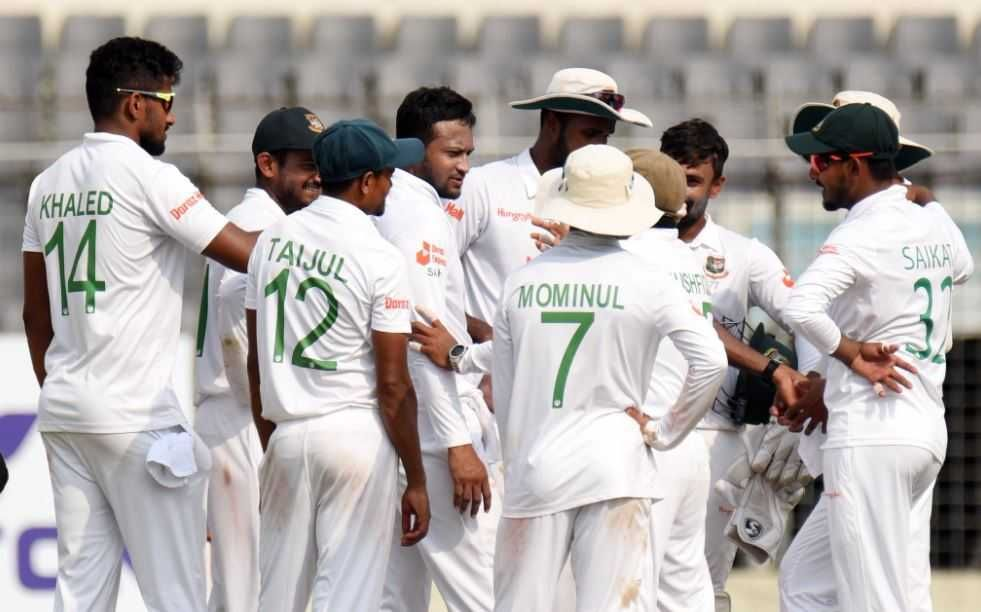

Bangladesh Cricket Team

Bangladesh men's national cricket team (Bengali: বাংলাদেশ জাতীয় ক্রিকেট দল) , popularly known as The Tigers,[12] is administered by the Bangladesh Cricket Board (BCB). It is a Full Member of the International Cricket Council (ICC) with Test, One-Day International (ODI) and T20 International (T20I) status. It played its first Test match in November 2000 against India with a 9 wicket loss in Dhaka, becoming the tenth Test-playing nation.[13][14][15][16][17] Bangladesh became an associate member of the ICC in 1977,[18] and competed in six ICC Trophies, the leading ODI competition for non-Test playing nations. Bangladesh's first official foray into international cricket came in the 1979 ICC Trophy in England. On 31 March 1986, Bangladesh played its first ODI match, against Pakistan in the Asia Cup. For a long time, football was the most popular sport in Bangladesh, but cricket gradually became very popular – particularly in urban areas – and by the late 1990s had surpassed football. Bangladesh made its full debut in international cricket in the 1986 Asia Cup.In 1997, Bangladesh won the ICC Trophy in Malaysia and thus qualified for its first Cricket World Cup to participate in England in 1999. There, it defeated Pakistan – causing much upset – and also Scotland. On 26 June 2000, Bangladesh was granted full ICC membership.[19][20][21][22][23] Bangladesh holds the record for most consecutive losses in Tests (21, between 2000 and 2002) and ODIs (23, between 2001 and 2004). After gaining Full Member status with the ICC, Bangladesh had to wait until 2004 for its first ODI win since the 1999 World Cup. The team on the losing side on that occasion was Zimbabwe, who also participated in Bangladesh's maiden Test victory in 2005; by securing a draw in the second match, Bangladesh won their first Test series.
In 2009 Bangladesh toured the West Indies for two Tests and by winning both secured their first overseas Test series victory. They then came back to the Caribbean in 2014 for another 2 match test series and the West Indies claimed revenge on Bangladesh for that 2-test series loss that they gave them 5 years earlier by defeating in both test matches. As of 27 June 2022, Bangladesh has played 134 Tests, winning 16. Its first victory was against Zimbabwe, and the next two came against the West Indies. Results have improved predominantly at home with draws earned against Pakistan, India and South Africa and wins against England, Sri Lanka, New Zealand and Australia.[24] They played their 100th Test when they toured Sri Lanka in March 2017 which they won by 4 wickets.[25][26][27][28][29][30] As of 23 March 2022, the team has been more successful in ODIs, having won 140 of its 394 matches.[31] They played their 100th ODI[32][33] when India toured Bangladesh in December 2004 which they won, 200th ODI when Bangladesh toured West Indies in 2009 which they won and 300th ODI[34] in the quarter-final of the 2015 ICC Cricket World Cup against India. They got their 100th ODI win when Afghanistan toured Bangladesh in October 2016.[35][36] Bangladesh have also played 125 T20Is, winning 44.[37] They played their 100th T20I against Zimbabwe in July 2021 which they won.[38][39] Results have improved with wins against Pakistan, India, Sri Lanka, Australia, New Zealand and West Indies.[40] Bangladesh's major achievements include reaching the quarter-finals in 2015 ICC Cricket World Cup, being runners up in three Asia Cup (in 2012, 2016 and 2018) and in 2018 Nidahas Trophy and winning 2019 Ireland Tri-Nation Series which was Bangladesh's first ever multi-team ODI tournament final win. As of 6 April 2022, Bangladesh is ranked 9th in Tests, 7th in ODIs and 9th in T20Is by the ICC.[41]

Bangladesh became the Full Member of the ICC in 2000 and became the tenth Test-playing country. They played their first Test match against India in Dhaka in 2000. Bangladesh put up a strong front against the Indian team. The batting performance of Aminul Islam Bulbul scoring 145 runs off 380 balls and the bowling performance of Naimur Rahman claiming 6 wickets for 132 runs boosted the confidence of the Bangladesh Test cricket team. India won this match by 9 wickets.Bangladesh participated in the Asian Test Championship in 2001-02, losing both matches of this tournament by an innings. In November 2001, Zimbabwe toured Bangladesh which included a two-match Test series. The first Test resulted in a draw due to bad weather and the second Test match was won by Zimbabwe. Khaled Masud was appointed captain of the Test team for the Bangladesh tour of New Zealand. Bangladesh struggled against the Kiwis in unfamiliar conditions and suffered losses in all matches of the tour. In January 2002, Bangladesh lost a two-match Test series against Pakistan. Bangladesh along with South Africa were the only teams who struggled so much at the beginning of Test cricket. Sri Lanka claimed their biggest victory in Test cricket against Bangladesh by winning the match by an innings and 196 runs. In January 2005, Zimbabwe toured Bangladesh for two Tests and five ODI matches. Zimbabwe had an inexperienced team in this Test series against Bangladesh which played to Bangladesh’s advantage. Bangladesh claimed their first Test victory against Zimbabwe in the inaugural Test of the series. They won this match by 226 runs. Emanuel Haque Jr, Habibul Bashar, Mohammad Rafique played a vital role in the first Test victory for Bangladesh.Bangladesh still seems to be struggling when it comes to Test cricket. They have a few talented players in their team but the lack of Test temperament has been a cause of concern for this team. Since the nation’s introduction to Test cricket, they haven’t been able to build a strong Test cricket team. In the ICC World Test Championship 2021, Bangladesh was ranked last of all the teams after losing 6 out of 7 matches in the league stage.
Since then, Bangladesh has played many tournaments and has managed to make a place for themselves in ODI cricket. Bangladesh was at its peak in ODI cricket when Shakib Al Hasan was named the best all-rounder in the ICC rankings, he was the first and only player from Bangladesh to top this list. Bangladesh qualified for the second quarterfinal in the World Cup 2015 by defeating England. This was by far the most impressive performance by Bangladesh in ODI cricket. They are currently placed 7th in the ICC rankings for the ODI teams.

ODI is the oldest form of cricket played in Bangladesh. There have been records of many first-class matches being played in Bangladesh in the past. After becoming an Associate Member of the ICC, Bangladesh played their first ODI match against Pakistan at Tyronne Fernando Stadium, Moratuwa in 1986. This was the 2nd match of the John Player Gold Leaf Trophy, now known as the Asia Cup. Bangladesh posted a total of mere 94 runs and Pakistan won this match by 7 wickets. Bangladesh qualified for the 1988 Asia Cup and hosted the tournament. This was the first time an ODI tournament took place in Bangladesh. Bangladesh also participated in the 1990 Austral-Asia Cup followed by Asia Cups in 1995 and 1997 along with many triangular ODI tournaments. It was in 1998 that Bangladesh claimed its first ODI victory against Kenya. This match was played at Lal Bahadur Shastri Stadium, Hyderabad, India, and was won by Bangladesh by 6 wickets. They had lost 22 consecutive ODI matches before they could achieve their first victory. In 1998, Bangladesh hosted the first-ever ICC KnockOut Trophy, later known as the Champions Trophy, but could not participate in it as this was the ODI tournament only for the Test-playing countries.
Bangladesh went on to take part in the 1979, 1982, 1986, 1990 and 1994 seasons of the ICC Trophy. They won the ICC Trophy in 1997 and eventually qualified for the 1999 World Cup. Bangladesh played its first world cup match in England and claimed its first world cup win against Scotland. Bangladesh was considered the underdogs in this tournament, but this team created headlines after defeating Pakistan. This was one of the biggest upsets for Pakistan in international cricket.

Bangladesh played their first-ever T20I match against Zimbabwe at Sheikh Abu Naser Stadium, Khulna in November 2006. Bangladesh batted first, posted a total of 166 runs and won this match by 43 runs. Mashrafe Mortaza was awarded the Man of the Match due to his impressive all-round performance.The year 2016 was the golden period for Bangladesh in T20I. Bangladesh hosted the 2016 Asia Cup and ended the tournament as runner-up after losing the final to India. They had a similar opportunity of winning the cup in 2018 but again lost the final match.
Bangladesh posed a serious threat to the Indian team in the Super 10 group 2 match of the World T20 2016 in Bengaluru. This match resulted in a disappointment for Bangladesh due to the final over debacle. Bangladesh is currently 10th in the ICC ranking for T20 teams.
Summary
Bangladesh is one of the younger teams in international cricket. Due to this, they had to face many defeats in the past. This team has been inconsistent with its performances due to the lack of seasoned players. In recent times, the Bangladesh cricket team has had many upcoming talents. Especially after their win in the Under-19 World Cup 2020, growth in the quality of cricket demonstrated by this team is highly expected.